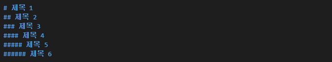
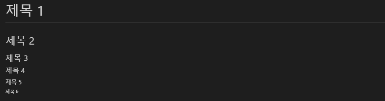
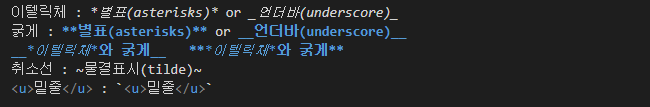
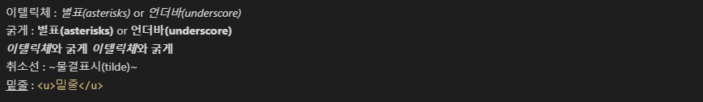
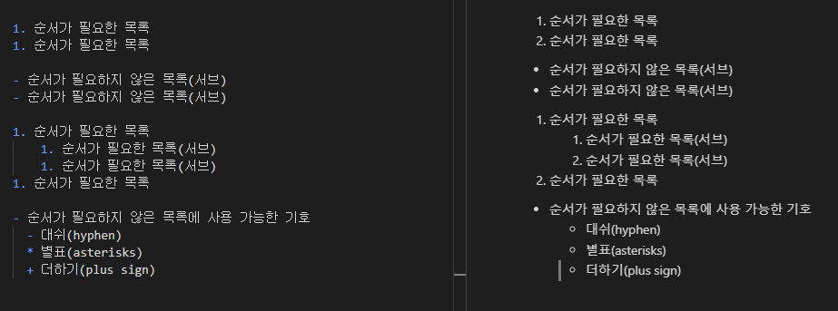
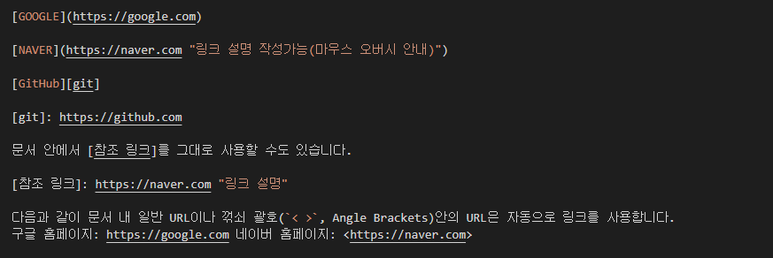

마크다운(MarkDown)에 대해서
: 마크다운(Markdown)은 일반 텍스트 기반의 경량 마크업 언어다. 일반 텍스트로 서식이 있는 문서를 작성하는 데 사용되며, 일반 마크업 언어에 비해 문법이 쉽고 간단한 것이 특징이다.
마크다운의 장점
- 문법이 쉽다.
- 관리가 쉽다.
- 지원 가능한 플랫폼과 프로그램이 다양하다.
마크다운의 단점
- 표준이 없어 사용자마다 문법이 상이할 수 있다.
- 모든 HTML 마크업을 대신하지 못한다.
예시..
제목(header)
 강조(Emphasis)
 *_(언더바)는 글자 사이에서 안써지는 느낌
목록(List)
링크(Links)
...